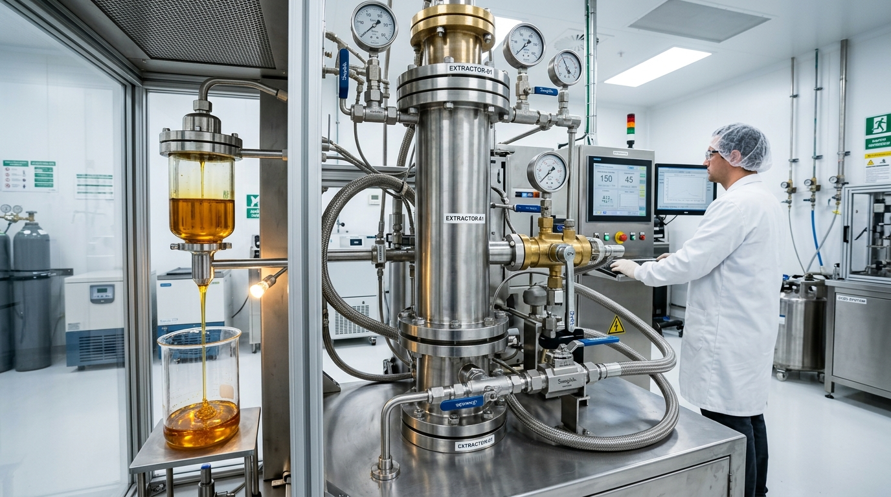

Extratos Naturais
Compostos de elevado valor a partir de matrizes naturais, produzidos utilizando apenas tecnologias amigas do ambiente — destilação a vapor e hidrodestilação, e extração com CO₂ supercrítico.
Tecnologias de Extração
A NatureXtracts produz extratos ricos em compostos de valor acrescentado a partir de matrizes naturais, utilizando apenas tecnologias amigas do ambiente.
Extração com CO₂ Supercrítico
A extração com CO₂ supercrítico é uma tecnologia diferenciadora e inovadora utilizada na extração de compostos de alto valor. É um processo que recorre a altas pressões e a temperaturas relativamente baixas e que resulta na produção de extratos de alta qualidade, uma vez que a integridade dos compostos sensíveis à temperatura é garantida. A ausência de oxigénio durante todo o processo de extração é outra vantagem desta tecnologia, que assegura a proteção dos extratos mais sensíveis contra os efeitos indesejáveis da oxidação.
O CO₂ utilizado na extração de compostos de valor é de qualidade alimentar e é classificado como GRAS (Generally Recognized As Safe) — qualificação atribuída pela FDA (American Food and Drug Administration) para designar substâncias consideradas seguras para o consumo humano. Os extratos produzidos através da extração com CO₂ supercrítico são estéreis, 100% puros e livres de resíduos de solventes.


Destilação a Vapor e Hidrodestilação
A destilação a vapor é comumente utilizada na extração de óleos essenciais de matrizes vegetais. Esta tecnologia utiliza o vapor na extração de moléculas aromáticas e voláteis da biomassa vegetal, num processo que decorre de forma rápida de modo a evitar a degradação do óleo por efeito da temperatura.
Na hidrodestilação, em vez de vapor, a água é utilizada na extração dos óleos essenciais presentes nas partes de plantas ricas em compostos aromáticos. Em ambos os processos, os vapores dos compostos voláteis são conduzidos para um condensador onde arrefecem e se liquefazem, sendo posteriormente recolhidos num separador denominado florentino.
Extratos de Algas e Plantas
Os extratos naturais da NatureXtracts são produzidos a partir de matérias-primas selecionadas e de alta qualidade. Exigimos dos nossos fornecedores o cumprimento rigoroso de requisitos de qualidade que garantem a integridade e a consistência dos nossos extratos.
Extratos de Algas e de Plantas
As algas têm despertado cada vez mais interesse devido ao seu potencial industrial. Muitas espécies de micro e de macroalgas são já consideradas fontes naturais e sustentáveis de ingredientes funcionais, tais como pigmentos, proteínas, antioxidantes, ácidos gordos e vitaminas, com benefícios adicionais para o bem-estar de humanos e animais.
Muitos compostos extraídos de plantas e de algas são usados como ingredientes funcionais nas indústrias de alimentação humana e animal, nutracêutica, farmacêutica e cosmética.

A NatureXtracts produz sob encomenda os seguintes extratos naturais:
Extratos de Microalgas
Extratos ricos em carotenoides e ácidos gordos polinsaturados de microalgas.
Extratos de Macroalgas
Extratos ricos em polissacarídeos de macroalgas.
Extratos de Plantas
Extratos de plantas ricos em compostos bioativos.
Na NatureXtracts, oferecemos os extratos bioativos e 100% naturais de que os nossos clientes necessitam para as suas formulações.
Pronto para Desenvolver o Seu Extrato?
Entre em contacto com a nossa equipa de engenheiros de processo e bioquímicos para planear o seu produto personalizado.